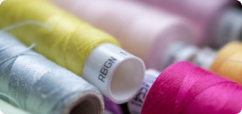

ASSURED LOWEST PRICE YARN
LIFE IS A LOOM, WEAVING ILLUSION!
I've always done things the hard way.
I was born like a piece of tangled
yarn.The
job is trying to untangle it, and I'll probably go on doing it for the rest of my life.
CHOOSE YOUR THREAD
Thread is found either on the wall or in a common area in the fabric store. It is sorted by company
name, type, and color. Do not buy your thread from discount bins. A discount thread is NOT a bargain.
They almost always guarantee a headache when sewing!

Cotton Thread
A cotton thread has very little stretch. low sheen and a matte appearance. Choose a medium
thickness cotton thread for working with lightweight to medium-weight cotton, linen, and rayon..
Polyester Thread
Polyester thread is a true all-purpose thread, and it’s a good choice for most sewing projects.
The thread is strong, colorfast, some stretch to it, heat and mildew resistant, and a tremendous
color variety.
Silk Thread
Silk thread is strong, smooth, and lustrous. It great to use when sewing silk or wool.. low
sheen and a matte appearance. Choose a medium thickness cotton thread.
Metallic Thread
Metallic thread is a thread that has been wrapped in thin metal. You can find it in gold, silver
and copper varieties. You will need to change out your needle when sewing with metallic thread.
DON’T THINK,BUY TODAY!
To pick the right color of thread, unravel the thread end off of the spool and place it across your
fabric. You want the thread to blend/disappear into the fabric. If your fabric is multicolored or
printed in a few different colors, you can choose the dominant color.
OUR CLASSES
To pick the right color of thread, unravel the thread end off of the spool and place it across your
fabric. You want the thread to blend/
disappear into the fabric. If your fabric is multicolored or printed in a few different colors, you can
choose the dominant color.
First Class Thread
Sewing threads are special kinds of yarns that are engineered and
designed to pass through a sewing machine rapidly. They form efficient stitches without breaking
or becoming distorted during the useful life of the product. The basic function of a thread is
to deliver aesthetics and performance in stitches and seams.
FIRST CLASS THREAD
Thread is made using natural or synthetic fibres. Spun polyester is one of the most widely used
threads. It is stronger than cotton threads of a comparable size, and is available in a wide
variety of sizes and colours.
Thread is a combination of staple fibres and filaments. The most commonly used corespun thread has multiple-ply construction, with each ply consisting of a polyester filament core with cotton or polyester fibres wrapped around the core.
Thread is a combination of staple fibres and filaments. The most commonly used corespun thread has multiple-ply construction, with each ply consisting of a polyester filament core with cotton or polyester fibres wrapped around the core.
THIRD CLASS THREAD
SECOND CLASS THREAD
Thread is made using natural or synthetic fibres. Spun polyester is one of the most widely used
threads. It is stronger than cotton threads of a comparable size, and is available in a wide
variety of sizes and colours.
Thread is a combination of staple fibres and filaments. The most commonly used corespun thread has multiple-ply construction, with each ply consisting of a polyester filament core with cotton or polyester fibres wrapped around the core.
Thread is a combination of staple fibres and filaments. The most commonly used corespun thread has multiple-ply construction, with each ply consisting of a polyester filament core with cotton or polyester fibres wrapped around the core.
FOURTHCLASS THREAD
Second Class Thread
Sewing threads are special kinds of yarns that are engineered and
designed to pass through a sewing machine rapidly. They form efficient stitches without breaking
or becoming distorted during the useful life of the product. The basic function of a thread is
to deliver aesthetics and performance in stitches and seams.
OUR GALLERY
Send us Now
CONTACT US
G.RAKESH KUMAR
we are available at:
Kamaraja puram,3rd cross,karur
dt.639002
Contact details:
6382784746
9585089223
rakeshgovind95@gmail.com